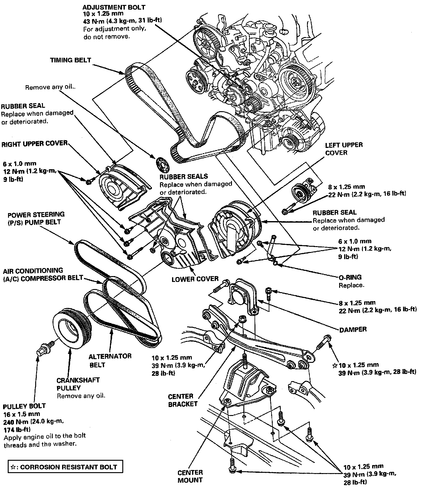
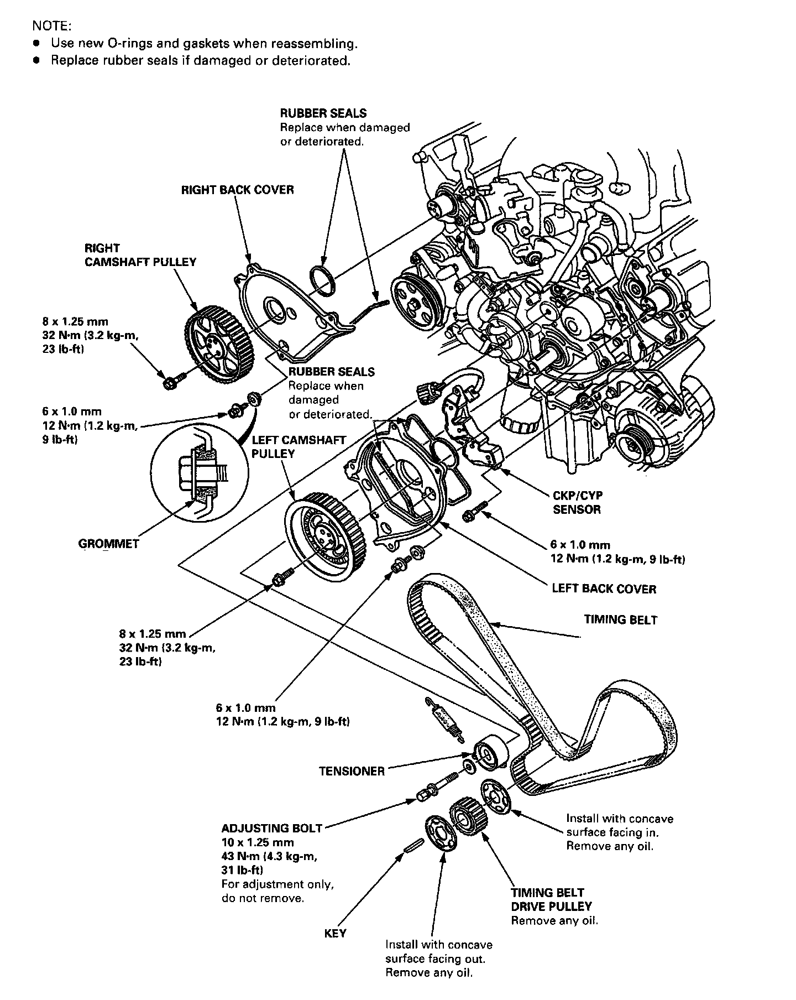

Timing Belt: Locations
Timing Belt / Illustrated Index:


Timing Belt / Illustrated Index
NOTE:
- Turn the crankshaft so that the No.1 piston is at TDC.
- Replace rubber seals if damaged or deteriorated.
- Remove the damper, the center bracket and the center mount before removing the crankshaft pulley.